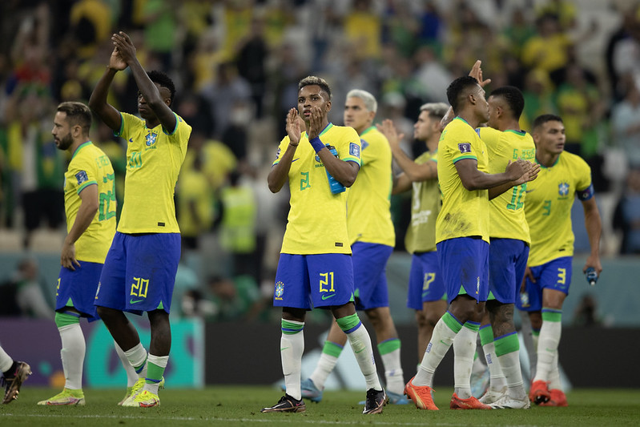

Confira, em primeira mão, todos os lançamentos e detalhes dos novos uniformes que vão vestir os gigantes do esporte!.

O futebol é um dos esportes mais populares do mundo e possui milhões de praticantes e torcedores em diferentes países. O objetivo do jogo é marcar gols, conduzindo a bola principalmente com os pés e respeitando as regras estabelecidas. A modalidade moderna foi organizada na Inglaterra, durante o século XIX, e se espalhou pelo mundo. No Brasil, o futebol tornou-se parte importante da cultura nacional, sendo acompanhado por pessoas de diferentes idades e classes sociais. Além de proporcionar entretenimento, o esporte estimula a atividade física, a disciplina, a cooperação e o respeito aos adversários. Também aproxima famílias e comunidades, criando tradições e momentos de união.
A prática do futebol contribui para melhorar a saúde física e mental. Durante uma partida, os jogadores correm, caminham, saltam, mudam de direção e realizam movimentos que desenvolvem a resistência cardiovascular, a força, a velocidade e a coordenação motora. A atividade também pode ajudar no controle do peso e na prevenção do sedentarismo. Além dos benefícios físicos, jogar futebol favorece a convivência social e pode diminuir o estresse do cotidiano. Entretanto, é importante realizar aquecimento, utilizar equipamentos adequados, beber água e respeitar os limites do corpo. Com treinamento responsável e orientação apropriada, o futebol pode ser praticado como lazer ou de maneira competitiva.
O futebol possui uma influência cultural muito grande, especialmente no Brasil, onde clubes e seleções fazem parte da identidade de muitas comunidades. Os torcedores acompanham campeonatos, utilizam camisas dos seus times e se reúnem para assistir às partidas. Grandes jogos podem movimentar cidades inteiras e criar lembranças que passam de uma geração para outra. O esporte também está presente na música, na televisão, no jornalismo e nas conversas do dia a dia. Apesar dessa paixão, é fundamental que a rivalidade permaneça saudável. O respeito entre torcedores, atletas e árbitros ajuda a combater a violência e a discriminação, permitindo que o futebol continue sendo uma forma de lazer e integração social.
O futebol movimenta uma grande economia, gerando empregos para jogadores, treinadores, árbitros, médicos, preparadores físicos, jornalistas e profissionais de marketing. Os clubes obtêm receitas com ingressos, patrocínios, direitos de transmissão, produtos oficiais e negociações de atletas. Os campeonatos também beneficiam hotéis, restaurantes, transportes e outros negócios próximos aos estádios. Entretanto, a administração financeira é um desafio, pois algumas equipes gastam mais do que conseguem arrecadar. Por isso, o planejamento, a transparência e o investimento nas categorias de base são importantes para a sustentabilidade dos clubes. Quando bem administrado, o futebol pode contribuir para a economia e criar oportunidades profissionais.
O futebol é organizado em diferentes níveis, desde campeonatos amadores e escolares até competições profissionais internacionais. No Brasil, destacam-se o Campeonato Brasileiro, a Copa do Brasil e os campeonatos estaduais. Internacionalmente, existem torneios como a Liga dos Campeões da Europa e as competições de seleções organizadas pela FIFA. Essas disputas permitem comparar equipes, revelar talentos e criar oportunidades para atletas. O futebol feminino também vem conquistando maior visibilidade, com crescimento de público, investimento e profissionalização. Para que esse avanço continue, é necessário ampliar a estrutura de treinamento, oferecer melhores condições de trabalho e combater a desigualdade entre as categorias masculina e feminina.
O calendário do futebol brasileiro continua movimentado no fim de outubro de 2026. Segundo a Confederação Brasileira de Futebol (CBF), entre 28 de outubro e 8 de novembro haverá uma sequência de partidas do Campeonato Brasileiro e da Copa do Brasil. A programação inclui rodadas do Brasileirão e os jogos de ida e volta das semifinais da Copa do Brasil, período importante para os clubes que disputam títulos e vagas em competições futuras. Essa concentração de partidas demonstra a importância do planejamento físico dos atletas, da recuperação entre jogos e da organização do calendário. Para os torcedores, também representa um período de grande expectativa.
O futuro do futebol está relacionado ao desenvolvimento tecnológico, à formação de jovens atletas e à expansão das competições femininas. Atualmente, ferramentas como o árbitro de vídeo (VAR), os sistemas de análise de desempenho e o monitoramento físico ajudam equipes e árbitros a tomar decisões e preparar os jogadores. Ao mesmo tempo, o esporte enfrenta desafios como lesões, racismo, violência entre torcedores e desigualdade financeira entre clubes. A formação de atletas precisa valorizar não apenas a habilidade técnica, mas também a educação, a disciplina e o respeito. O futebol continuará evoluindo, mas sua essência permanecerá na união entre estratégia, habilidade, trabalho coletivo e paixão pelo jogo.
Confira, em primeira mão, todos os lançamentos e detalhes dos novos uniformes que vão vestir os gigantes do esporte!.

O trono dos e-sports tem um novo dono: confira todos os detalhes da vitória monumental que colocou essa equipe histórica no topo do mundo!

Confira como a atual crise de lesões e o calendário apertado estão mudando os rumos do futebol mundial!
Quer enviar uma sugestão de pauta, fazer uma denúncia esportiva, anunciar sua marca ou tirar dúvidas? Nossa equipe está pronta para ouvir você. Entre em contato pelos nossos canais oficiais: